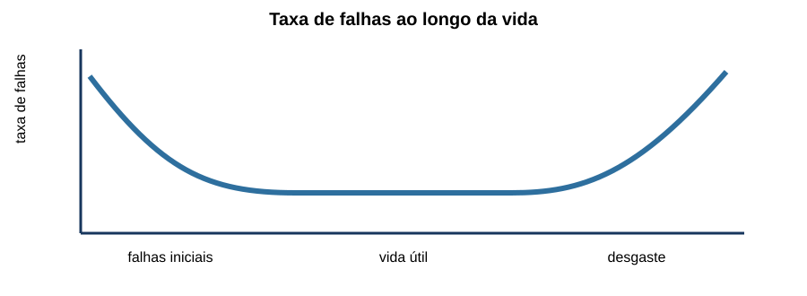
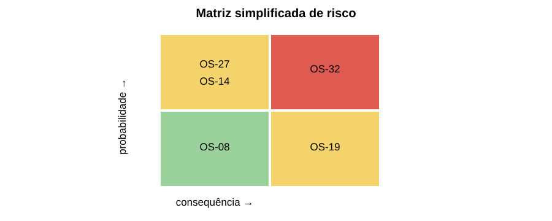
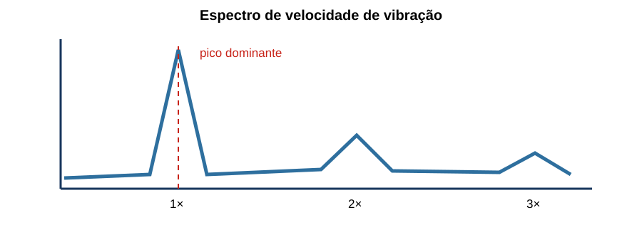
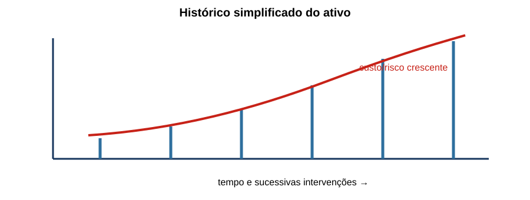

Manutenção & Gestão Predial
20 questões autorais calibradas pelo padrão IDECAN • Bloco Prata
| Questão 01 | Estratégias de Manutenção • Classificação |
Uma equipe substitui correias de ventiladores a cada 4.000 horas, mede vibração mensalmente e troca um contator somente após ele deixar de operar. As ações são, respectivamente:
A) preditiva, preventiva e detectiva.
B) corretiva, preditiva e preventiva.
C) preventiva, preditiva e corretiva.
D) preventiva, corretiva e preditiva.
Gabarito Comentado: Alternativa C
A troca em intervalo predefinido é preventiva sistemática; o acompanhamento de vibração para inferir condição é preditivo; a intervenção após falha funcional é corretiva. Uma mesma instalação pode combinar estratégias conforme criticidade e modo de falha.
Análise das armadilhas:Associar qualquer inspeção à preventiva ou chamar toda substituição de corretiva, ignorando o gatilho da ação.Como pensar nesta questão:Pergunte o que iniciou a intervenção: calendário, condição medida ou falha já ocorrida.
| Questão 02 | Confiabilidade • MTBF e MTTR |
Durante 2.000 horas de observação, um sistema reparável apresentou quatro falhas e acumulou 40 horas em reparo. Usando tempo efetivo de operação no MTBF, os valores aproximados de MTBF e MTTR são:
A) 490 h e 10 h.
B) 500 h e 10 h.
C) 490 h e 40 h.
D) 510 h e 8 h.
Gabarito Comentado: Alternativa A
O tempo em operação foi $2.000-40=1.960\,h$. Assim, $MTBF=1.960/4=490\,h$ e $MTTR=40/4=10\,h$. O enunciado esclarece que o tempo parado não entra no numerador do MTBF.
Análise das armadilhas:Usar as 2.000 horas totais no MTBF ou dividir o reparo pelo tempo total em vez do número de falhas.Como pensar nesta questão:Monte a linha do tempo: separe operação e reparo e use o mesmo número de eventos nas duas médias.
| Questão 03 | Disponibilidade Inerente • Cálculo |
Um equipamento possui $MTBF=720\,h$ e $MTTR=8\,h$. Pela aproximação $A=MTBF/(MTBF+MTTR)$, sua indisponibilidade é aproximadamente:
A) 0,11%.
B) 0,80%.
C) 8,0%.
D) 1,10%.
Gabarito Comentado: Alternativa D
$A=720/(720+8)=0{,}9890$, ou 98,90%. A indisponibilidade é $1-Approx1{,}10\%$. O valor pequeno decorre do MTTR muito menor que o MTBF.
Análise das armadilhas:Marcar diretamente $8/720$ sem considerar o ciclo completo ou confundir disponibilidade com indisponibilidade.Como pensar nesta questão:Calcule a fração de tempo reparando: $MTTR/(MTBF+MTTR)$.
| Questão 04 | Curva da Banheira • Política de Manutenção |
A figura representa a taxa de falhas ao longo da vida.

Na fase de desgaste, uma política coerente é:A) reduzir inspeções porque a taxa de falhas tende a cair continuamente.
B) planejar renovação ou substituição por idade/condição antes do crescimento inaceitável do risco.
C) aplicar somente manutenção corretiva, pois intervenções programadas aumentam a vida remanescente automaticamente.
D) atribuir todas as falhas a defeitos de fabricação, independentemente do histórico.
Gabarito Comentado: Alternativa B
Na região de desgaste, mecanismos cumulativos elevam a taxa de falhas. Renovação programada, monitoramento e substituição antes do limite de risco podem ser adequados. A decisão depende do modo de falha e da criticidade.
Análise das armadilhas:Aplicar uma única política a todas as fases ou interpretar a curva como destino inevitável de todo componente.Como pensar nesta questão:Localize a fase, identifique o mecanismo dominante e escolha uma ação capaz de alterar sua consequência ou probabilidade.
| Questão 05 | RCM • Seleção de Tarefas |
Em análise de manutenção centrada em confiabilidade, uma falha oculta de dispositivo de proteção só é percebida quando outra falha exige sua atuação. A tarefa mais diretamente associada a esse modo é:
A) substituição estética por idade.
B) limpeza após cada atuação do equipamento principal.
C) teste funcional ou tarefa de busca de falha em intervalo definido.
D) correção apenas depois de ocorrer a falha múltipla.
Gabarito Comentado: Alternativa C
Falha oculta exige tarefa de detecção periódica, frequentemente chamada busca de falha, para verificar se a função protetiva continua disponível. Esperar a demanda real pode expor o sistema à falha múltipla.
Análise das armadilhas:Escolher manutenção por idade sem evidência de desgaste ou aceitar operar até uma combinação perigosa de falhas.Como pensar nesta questão:Pergunte se o operador percebe a perda da função durante operação normal. Se não, é preciso revelar a falha por teste.
| Questão 06 | FMEA • Número de Prioridade de Risco |
Dois modos de falha têm índices severidade, ocorrência e detecção: M1 = 9, 3 e 6; M2 = 6, 5 e 4. Usando $NPR=S\cdot O\cdot D$, qual prioridade resulta pelo NPR?
A) M2, porque sua ocorrência isolada é maior.
B) empate, porque a soma dos índices é 18 para M1 e 15 para M2.
C) M2, com NPR 120 contra 108 de M1.
D) M1, com NPR 162 contra 120 de M2.
Gabarito Comentado: Alternativa D
$NPR_1=9\cdot3\cdot6=162$ e $NPR_2=6\cdot5\cdot4=120$. Pelo critério solicitado, M1 tem maior prioridade. Na prática, severidade alta pode demandar tratamento mesmo quando o NPR não lidera.
Análise das armadilhas:Somar índices, comparar apenas ocorrência ou inverter a interpretação do índice de detecção.Como pensar nesta questão:Calcule o produto pedido e depois verifique se existe critério adicional de severidade ou risco intolerável.
| Questão 07 | Planejamento • Backlog |
Uma equipe possui 480 homem-horas de serviços planejados pendentes. Sua capacidade líquida semanal para executá-los é 120 homem-horas. Sem novas ordens, o backlog corresponde a:
A) 4 semanas.
B) 2 semanas.
C) 3 semanas.
D) 6 semanas.
Gabarito Comentado: Alternativa A
$Backlog=480/120=4$ semanas de capacidade. O indicador não informa sozinho a criticidade das ordens nem garante que materiais e liberações estejam disponíveis.
Análise das armadilhas:Dividir pelo número de pessoas sem considerar horas líquidas ou interpretar backlog alto como atraso uniforme de todas as ordens.Como pensar nesta questão:Converta carga pendente e capacidade para a mesma unidade e só então divida.
| Questão 08 | Priorização de Ordens • Risco |
A matriz mostra quatro ordens classificadas por probabilidade e consequência.

Sem outras barreiras, qual ordem deve receber prioridade técnica?A) OS-14, por ser a mais antiga.
B) OS-27, porque tem maior custo de material.
C) OS-32, situada na combinação de alta probabilidade e alta consequência.
D) OS-08, pois serviços de baixa consequência são concluídos mais rapidamente.
Gabarito Comentado: Alternativa C
Priorização baseada em risco combina probabilidade e consequência, não apenas idade, custo ou facilidade. A OS-32 ocupa a região mais crítica da matriz e deve ser tratada ou ter o risco controlado primeiro.
Análise das armadilhas:Confundir prioridade com FIFO, valor de compra ou quantidade de ordens encerradas.Como pensar nesta questão:Antes de olhar data e custo, identifique risco à segurança, continuidade, ambiente e patrimônio.
| Questão 09 | Termografia • Condição de Carga |
Uma inspeção termográfica encontra conexão 22 °C acima de fases equivalentes, mas o circuito operava a apenas 15% da carga usual. A conduta adequada é:
A) aprovar definitivamente porque a temperatura absoluta ficou abaixo de 60 °C.
B) registrar o indício e repetir ou complementar a avaliação sob carga representativa, verificando corrente, emissividade e conexão.
C) condenar o painel inteiro, pois qualquer diferença superior a 10 °C prova falha generalizada.
D) converter diretamente a diferença térmica em torque residual do parafuso.
Gabarito Comentado: Alternativa B
A baixa carga pode esconder a evolução térmica do defeito. A diferença relativa é indício relevante, mas diagnóstico e severidade exigem corrente, emissividade, ambiente, histórico e verificações complementares.
Análise das armadilhas:Usar limite absoluto sem contexto ou transformar termografia em medidor de torque.Como pensar nesta questão:Compare componentes equivalentes e confirme se a condição operacional permite revelar o modo de falha.
| Questão 10 | Análise de Vibração • Espectro |
O espectro apresenta pico dominante em 1× a rotação, predominantemente radial, conforme a figura.

O diagnóstico inicial mais compatível, a confirmar em campo, é:A) falha elétrica de isolação, independentemente de fase e direção da vibração.
B) desgaste de rolamento exclusivamente, pois rolamentos falham sempre em 1×.
C) cavitação confirmada, sem necessidade de verificar processo ou ruído.
D) desbalanceamento, devendo-se conferir fase, montagem e outras causas antes da conclusão.
Gabarito Comentado: Alternativa D
Desbalanceamento costuma produzir componente radial forte em 1×, mas um único pico não prova causa. Fase, direções, histórico, alinhamento, folgas e condição do processo ajudam a confirmar ou excluir hipóteses.
Análise das armadilhas:Escolher um defeito pelo nome do método ou tratar uma assinatura típica como diagnóstico conclusivo.Como pensar nesta questão:Use o espectro para gerar hipótese e procure uma segunda evidência independente antes de intervir.
| Questão 11 | Transformadores • Análise de Óleo |
Uma análise de gases dissolvidos mostra tendência crescente de um gás ao longo de três coletas, embora o valor mais recente ainda esteja abaixo de um limite genérico. A decisão mais robusta é:
A) analisar tendência, taxa de geração, relações entre gases, carga e histórico antes de definir intervenção.
B) ignorar os resultados até que qualquer valor ultrapasse o limite absoluto.
C) substituir imediatamente o transformador com base em um único gás, sem confirmar amostragem.
D) diluir a amostra seguinte para verificar se o instrumento retorna ao valor inicial.
Gabarito Comentado: Alternativa A
Diagnóstico de óleo combina magnitude, tendência, velocidade de evolução, padrão de gases e contexto operacional. Um valor isolado abaixo de limite pode esconder deterioração acelerada; também é preciso validar coleta e laboratório.
Análise das armadilhas:Usar apenas semáforo de limite ou transformar tendência em condenação automática.Como pensar nesta questão:Compare o equipamento consigo mesmo ao longo do tempo e associe a química ao modo de falha possível.
| Questão 12 | Gestão de Sobressalentes • Criticidade |
Um relé custa pouco e raramente falha, mas sua falta pode manter uma subestação parada por 90 dias; outro componente caro possui entrega em 24 horas e redundância instalada. O estoque deve priorizar:
A) sempre o item de maior preço unitário.
B) o relé de longo prazo e alta consequência, considerando criticidade e lead time.
C) o componente redundante, porque maior custo significa maior risco operacional.
D) nenhum dos dois, pois baixa frequência elimina necessidade de sobressalente.
Gabarito Comentado: Alternativa B
Decisão de estoque combina probabilidade, consequência, tempo de reposição, redundância, reparabilidade e custo. Um item barato pode ser estratégico quando sua indisponibilidade prolonga falha crítica.
Análise das armadilhas:Equiparar valor financeiro à criticidade ou interpretar baixa taxa de falhas como risco nulo.Como pensar nesta questão:Calcule mentalmente o custo e o risco da falta, não apenas o custo da peça na prateleira.
| Questão 13 | Manutenção Predial • Plano Preventivo |
Para construir um plano de manutenção de quadros, gerador, UPS e iluminação de emergência, a melhor base é:
A) repetir a mesma periodicidade mensal para todos os ativos, independentemente de função e ambiente.
B) usar somente recomendações comerciais, sem histórico nem requisitos legais.
C) combinar criticidade, modos de falha, recomendações técnicas, ambiente, histórico e obrigações aplicáveis.
D) programar substituição anual de todos os componentes para eliminar inspeções.
Gabarito Comentado: Alternativa C
Um plano defensável liga tarefas e frequências aos modos de falha e ao risco, incorporando fabricante, experiência, condição ambiental e requisitos aplicáveis. Periodicidade uniforme pode gerar excesso em alguns ativos e lacunas em outros.
Análise das armadilhas:Confundir padronização com igualdade de frequência ou acreditar que troca sistemática elimina todas as falhas.Como pensar nesta questão:Para cada ativo, pergunte função, falha, efeito, evidência detectável e tarefa capaz de reduzir o risco.
| Questão 14 | Indicadores • Taxa de Cumprimento |
Foram programadas 80 ordens preventivas no mês; 68 foram concluídas no prazo, seis concluídas com atraso e seis ficaram abertas. A taxa de cumprimento no prazo é:
A) 82,5%.
B) 92,5%.
C) 77,5%.
D) 85,0%.
Gabarito Comentado: Alternativa D
A taxa solicitada considera as 68 concluídas dentro do prazo sobre as 80 programadas: $68/80=85\%$. As seis atrasadas podem contar como concluídas em outro indicador, mas não neste.
Análise das armadilhas:Somar todas as concluídas ou retirar as ordens abertas do denominador para melhorar artificialmente o resultado.Como pensar nesta questão:Leia exatamente o evento medido: programada, concluída e concluída no prazo não são sinônimos.
| Questão 15 | Falhas • Pareto |
Em um trimestre, as causas de 100 chamados foram: conexões frouxas 38, lâmpadas 26, disjuntores 14, infiltração 12 e outras 10. Atacando as duas maiores causas, cobre-se:
A) 52%.
B) 64%.
C) 74%.
D) 88%.
Gabarito Comentado: Alternativa B
As duas maiores categorias somam $38+26=64$ chamados, ou 64% do total. O Pareto ajuda a concentrar análise, mas frequência não substitui severidade na priorização de riscos críticos.
Análise das armadilhas:Somar três categorias para aproximar 80% ou ignorar uma causa rara de consequência grave.Como pensar nesta questão:Ordene por frequência, calcule o acumulado e depois faça uma checagem separada de severidade.
| Questão 16 | Manutenibilidade • Tempo de Reparo |
Um quadro redesenhado reduz o tempo médio de diagnóstico de 90 para 30 minutos e mantém 60 minutos de execução e retorno. A redução do MTTR é:
A) 40%.
B) 50%.
C) 25%.
D) 66,7%.
Gabarito Comentado: Alternativa A
Antes, $MTTR=90+60=150$ min; depois, $30+60=90$ min. A redução é $(150-90)/150=40\%$. Melhorar diagnóstico afeta apenas uma parcela, não elimina o restante do reparo.
Análise das armadilhas:Calcular 60/90 sobre o tempo de diagnóstico ou considerar apenas a parcela que mudou.Como pensar nesta questão:Some todas as etapas do reparo antes e depois; compare os totais.
| Questão 17 | Redundância • Falha em Comum |
Dois nobreaks em paralelo elevam a disponibilidade, mas compartilham a mesma sala sem climatização redundante e o mesmo barramento de bypass. Isso significa que:
A) a redundância elimina falhas simultâneas porque existem dois equipamentos.
B) cada nobreak passa a ter o dobro do MTBF indicado pelo fabricante.
C) a manutenção preventiva do bypass torna desnecessário testar transferência.
D) falhas de causa comum podem derrubar ambos, exigindo análise das dependências compartilhadas.
Gabarito Comentado: Alternativa D
Redundância só produz o ganho esperado quando os caminhos possuem independência suficiente. Ambiente, comando, alimentação, bypass e manutenção compartilhados podem criar pontos únicos ou causas comuns de falha.
Análise das armadilhas:Contar equipamentos sem desenhar as dependências físicas e funcionais.Como pensar nesta questão:Siga cada caminho da fonte até a carga e marque tudo o que é compartilhado.
| Questão 18 | Permissão de Trabalho • Manutenção Elétrica |
Uma corretiva urgente será executada em painel que alimenta serviço essencial. Antes da intervenção, a gestão deve:
A) manter o painel energizado apenas para evitar registro de indisponibilidade.
B) dispensar planejamento porque urgência reduz o tempo de exposição ao risco.
C) planejar isolamento, análise de risco, responsáveis, contingência, liberação e retorno seguro, conforme procedimentos aplicáveis.
D) transferir a decisão ao técnico mais próximo, sem informar a operação do prédio.
Gabarito Comentado: Alternativa C
Urgência aumenta a necessidade de controle. A intervenção deve coordenar segurança elétrica, impacto operacional, contingência, autorização, comunicação e teste de retorno. Indicador de disponibilidade não pode prevalecer sobre segurança.
Análise das armadilhas:Tratar pressa como justificativa para retirar barreiras ou ocultar indisponibilidade.Como pensar nesta questão:Defina estado seguro, quem autoriza, quem será afetado e como o sistema voltará à operação.
| Questão 19 | Ordem de Serviço • Qualidade dos Dados |
A ordem registra apenas “equipamento não funciona” e “feito reparo”. Para alimentar análise de confiabilidade, faltam principalmente:
A) nome completo de todos os usuários presentes no prédio.
B) modo de falha, causa confirmada ou provável, ação, tempos, peças e condição de retorno.
C) preço original do imóvel e valor contábil de cada circuito.
D) fotografia decorativa da fachada, ainda que não identifique o ativo.
Gabarito Comentado: Alternativa B
Dados estruturados sobre ativo, sintoma, modo, causa, intervenção, duração e resultado permitem calcular indicadores e evitar recorrência. Texto genérico fecha a ordem administrativamente, mas não gera conhecimento.
Análise das armadilhas:Coletar grande volume de informação sem relação com a falha ou aceitar campos genéricos por rapidez.Como pensar nesta questão:Pergunte quais dados permitiriam repetir o diagnóstico, calcular tempo e comparar falhas futuras.
| Questão 20 | Gestão de Ativos • Decisão de Renovação |
A linha do tempo mostra aumento de falhas e custos após sucessivas corretivas.

A decisão entre manter e substituir deve considerar:A) custo do ciclo de vida, condição, risco, obsolescência, desempenho e alternativas de renovação.
B) apenas o custo da última corretiva, desconsiderando indisponibilidade e risco.
C) somente a idade cronológica, adotando troca automática no aniversário do ativo.
D) o valor contábil já depreciado como prova de que o equipamento não pode falhar.
Gabarito Comentado: Alternativa A
Renovação é decisão técnico-econômica e de risco. Custos futuros de manutenção, energia, indisponibilidade, segurança, suporte e desempenho devem ser comparados ao investimento e risco da substituição; gastos passados não justificam perpetuar solução ruim.
Análise das armadilhas:Usar idade como único gatilho ou cair no custo afundado, mantendo o ativo porque já se gastou muito nele.Como pensar nesta questão:Compare cenários futuros sob a mesma fronteira: manter, reformar ou substituir, incluindo custo e consequência.